import pandas as pd
import numpy as np
import os
import matplotlib.pyplot as plt
from keras import models
from keras.utils import to_categorical, np_utils
from tensorflow import convert_to_tensor
from tensorflow.image import grayscale_to_rgb
from tensorflow.data import Dataset
from tensorflow.keras.layers import Flatten, Dense, GlobalAvgPool2D, GlobalMaxPool2D
from tensorflow.keras.callbacks import Callback, EarlyStopping, ReduceLROnPlateau
from tensorflow.keras import optimizers
from tensorflow.keras.utils import plot_modelIntroduction
In this notebook, we address the facial expression recognition challenge with transfer learning.
The data consists of 48x48 pixel grayscale images of faces. The faces have been automatically registered so that the face is more or less centered and occupies about the same amount of space in each image. The task is to categorize each face based on the emotion shown in the facial expression in to one of seven categories:
| category | emotion |
|---|---|
| 0 | Angry |
| 1 | Disgust |
| 2 | Fear |
| 3 | Happy |
| 4 | Sad |
| 5 | Surprise |
| 6 | Neutral |
DrCapa provided an excellent notebook, which presents a concise but nice data analysis, and a custom CNN model that achieves a testing accuracy of about 55%. Building on this work, I wanted to see if I can improve this by using pretrained MobileNet model, fine-tuning it, and including some data augmentation.
Libraries
Load & Prepare Data
# Define the input path and show all files
path = '/kaggle/input/challenges-in-representation-learning-facial-expression-recognition-challenge/'
os.listdir(path)['icml_face_data.csv',
'fer2013.tar.gz',
'example_submission.csv',
'train.csv',
'test.csv']# Load the image data with labels.
data = pd.read_csv(path+'icml_face_data.csv')data.head()| emotion | Usage | pixels | |
|---|---|---|---|
| 0 | 0 | Training | 70 80 82 72 58 58 60 63 54 58 60 48 89 115 121... |
| 1 | 0 | Training | 151 150 147 155 148 133 111 140 170 174 182 15... |
| 2 | 2 | Training | 231 212 156 164 174 138 161 173 182 200 106 38... |
| 3 | 4 | Training | 24 32 36 30 32 23 19 20 30 41 21 22 32 34 21 1... |
| 4 | 6 | Training | 4 0 0 0 0 0 0 0 0 0 0 0 3 15 23 28 48 50 58 84... |
#Overview
data[' Usage'].value_counts()Training 28709
PublicTest 3589
PrivateTest 3589
Name: Usage, dtype: int64emotions = {0: 'Angry', 1: 'Disgust', 2: 'Fear', 3: 'Happy', 4: 'Sad', 5: 'Surprise', 6: 'Neutral'}def prepare_data(data):
""" Prepare data for modeling
input: data frame with labels und pixel data
output: image and label array """
image_array = np.zeros(shape=(len(data), 48, 48))
image_label = np.array(list(map(int, data['emotion'])))
for i, row in enumerate(data.index):
image = np.fromstring(data.loc[row, ' pixels'], dtype=int, sep=' ')
image = np.reshape(image, (48, 48))
image_array[i] = image
return image_array, image_labelDefine training, validation and test data:
train_image_array, train_image_label = prepare_data(data[data[' Usage']=='Training'])
val_image_array, val_image_label = prepare_data(data[data[' Usage']=='PrivateTest'])
test_image_array, test_image_label = prepare_data(data[data[' Usage']=='PublicTest'])Reshape and scale the images:
train_images = train_image_array.reshape((train_image_array.shape[0], 48, 48, 1))
train_images = train_images.astype('float32')/255
val_images = val_image_array.reshape((val_image_array.shape[0], 48, 48, 1))
val_images = val_images.astype('float32')/255
test_images = test_image_array.reshape((test_image_array.shape[0], 48, 48, 1))
test_images = test_images.astype('float32')/255#As the pretrained model expects rgb images, we convert our grayscale images with a single channel to pseudo-rgb images with 3 channels
train_images_rgb = grayscale_to_rgb(convert_to_tensor(train_images))
val_images_rgb = grayscale_to_rgb(convert_to_tensor(val_images))
test_images_rgb = grayscale_to_rgb(convert_to_tensor(test_images))# Data Augmentation using ImageDataGenerator
#sources:
#https://www.tensorflow.org/api_docs/python/tf/keras/preprocessing/image/ImageDataGenerator
#https://pyimagesearch.com/2019/07/08/keras-imagedatagenerator-and-data-augmentation/
from tensorflow.keras.preprocessing.image import ImageDataGenerator
train_rgb_datagen = ImageDataGenerator(
rotation_range=0.15,
width_shift_range=0.15,
height_shift_range=0.15,
shear_range=0.15,
zoom_range=0.15,
horizontal_flip=True,
zca_whitening=False,
)
train_rgb_datagen.fit(train_images_rgb)Encoding of the target value:
train_labels = to_categorical(train_image_label)
val_labels = to_categorical(val_image_label)
test_labels = to_categorical(test_image_label)Some Examples
def plot_examples(label=0):
fig, axs = plt.subplots(1, 5, figsize=(25, 12))
fig.subplots_adjust(hspace = .2, wspace=.2)
axs = axs.ravel()
for i in range(5):
idx = data[data['emotion']==label].index[i]
axs[i].imshow(train_images[idx][:,:,0], cmap='gray')
axs[i].set_title(emotions[train_labels[idx].argmax()])
axs[i].set_xticklabels([])
axs[i].set_yticklabels([])
plot_examples(label=0)
plot_examples(label=1)
plot_examples(label=2)
plot_examples(label=3)
plot_examples(label=4)
plot_examples(label=5)
plot_examples(label=6)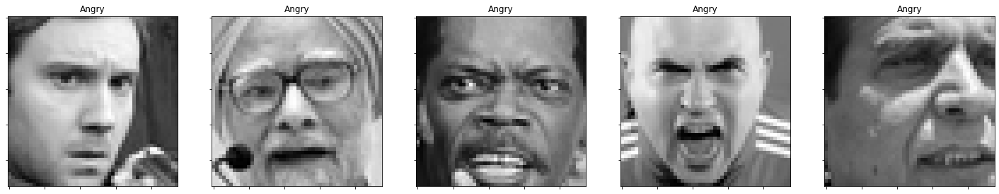
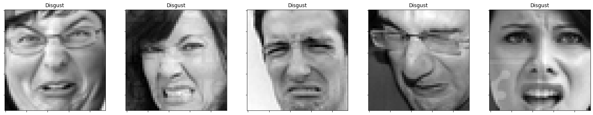
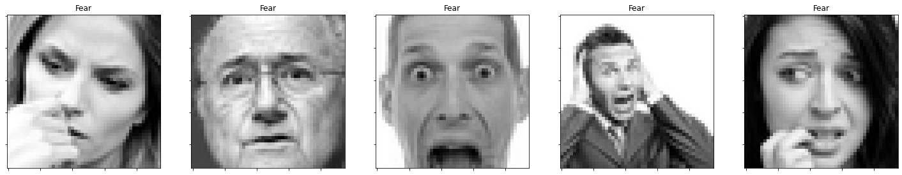
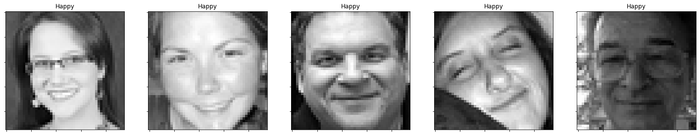
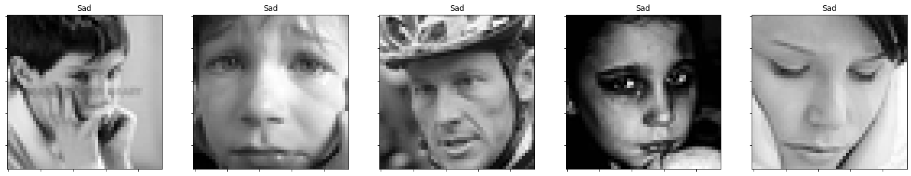
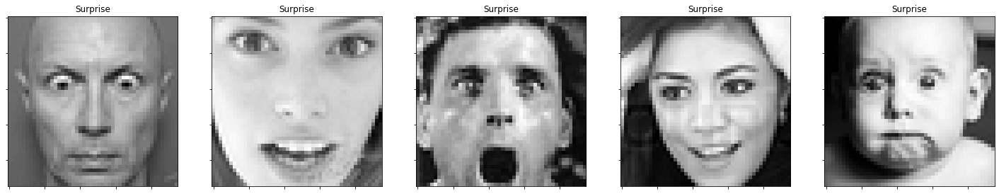
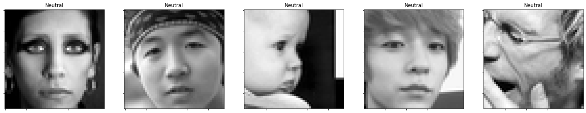
#In case we may want to save some examples:
from PIL import Image
def save_all_emotions(channels=1, imgno=0):
for i in range(7):
idx = data[data['emotion']==i].index[imgno]
emotion = emotions[train_labels[idx].argmax()]
img = train_images[idx]
if channels == 1:
img = img.squeeze()
else:
img = grayscale_to_rgb(convert_to_tensor(img)).numpy() #convert to tensor, then to 3ch, back to numpy
img_shape = img.shape
#print(f'img shape: {img_shape[0]},{img_shape[1]}, type: {type(img)}') #(48,48)
img = img * 255
img = img.astype(np.uint8)
suf = '_%d_%d_%d'%(img_shape[0],img_shape[1],channels)
os.makedirs('examples'+suf, exist_ok=True)
fname = os.path.join('examples'+suf, emotion+suf+'.png')
Image.fromarray(img).save(fname)
print(f'saved: {fname}')
save_all_emotions(channels=3,imgno=0)saved: examples_48_48_3/Angry_48_48_3.png
saved: examples_48_48_3/Disgust_48_48_3.png
saved: examples_48_48_3/Fear_48_48_3.png
saved: examples_48_48_3/Happy_48_48_3.png
saved: examples_48_48_3/Sad_48_48_3.png
saved: examples_48_48_3/Surprise_48_48_3.png
saved: examples_48_48_3/Neutral_48_48_3.pngDistribution Of Labels & Class Weights
def plot_compare_distributions(array1, array2, title1='', title2=''):
df_array1 = pd.DataFrame()
df_array2 = pd.DataFrame()
df_array1['emotion'] = array1.argmax(axis=1)
df_array2['emotion'] = array2.argmax(axis=1)
fig, axs = plt.subplots(1, 2, figsize=(12, 6), sharey=False)
x = emotions.values()
y = df_array1['emotion'].value_counts()
keys_missed = list(set(emotions.keys()).difference(set(y.keys())))
for key_missed in keys_missed:
y[key_missed] = 0
axs[0].bar(x, y.sort_index(), color='orange')
axs[0].set_title(title1)
axs[0].grid()
y = df_array2['emotion'].value_counts()
keys_missed = list(set(emotions.keys()).difference(set(y.keys())))
for key_missed in keys_missed:
y[key_missed] = 0
axs[1].bar(x, y.sort_index())
axs[1].set_title(title2)
axs[1].grid()
plt.show()plot_compare_distributions(train_labels, val_labels, title1='train labels', title2='val labels')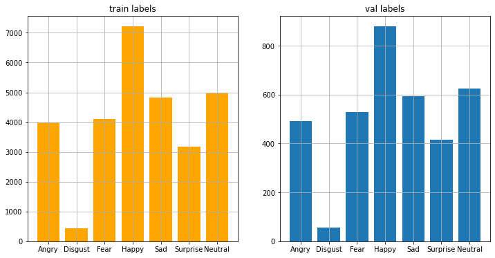
Calculate the class weights of the label distribution:
class_weight = dict(zip(range(0, 7), (((data[data[' Usage']=='Training']['emotion'].value_counts()).sort_index())/len(data[data[' Usage']=='Training']['emotion'])).tolist()))
class_weight{0: 0.1391549688251071,
1: 0.01518687519593159,
2: 0.14270786164617366,
3: 0.2513149186666202,
4: 0.16823992476226968,
5: 0.11045316799609878,
6: 0.17294228290779895}Model
General defintions and helper functions
#Define callbacks
early_stopping = EarlyStopping(
monitor='val_accuracy',
min_delta=0.00008,
patience=11,
verbose=1,
restore_best_weights=True,
)
lr_scheduler = ReduceLROnPlateau(
monitor='val_accuracy',
min_delta=0.0001,
factor=0.25,
patience=4,
min_lr=1e-7,
verbose=1,
)
callbacks = [
early_stopping,
lr_scheduler,
]#General shape parameters
IMG_SIZE = 48
NUM_CLASSES = 7
BATCH_SIZE = 64#A plotting function to visualize training progress
def render_history(history, suf=''):
fig, (ax1, ax2) = plt.subplots(1, 2)
plt.subplots_adjust(left=0.1,
bottom=0.1,
right=0.95,
top=0.9,
wspace=0.4)
ax1.set_title("Losses")
ax1.plot(history.history["loss"], label="loss")
ax1.plot(history.history["val_loss"], label="val_loss")
ax1.set_xlabel('epochs')
ax1.set_ylabel('value of the loss function')
ax1.legend()
ax2.set_title("Accuracies")
ax2.plot(history.history["accuracy"], label="accuracy")
ax2.plot(history.history["val_accuracy"], label="val_accuracy")
ax2.set_xlabel('epochs')
ax2.set_ylabel('value of accuracy')
ax2.legend()
plt.show()
suf = '' if suf == '' else '_'+suf
fig.savefig('loss_and_acc'+suf +'.png')Model construction
from tensorflow.keras.applications import MobileNet
from tensorflow.keras.models import Model
#By specifying the include_top=False argument, we load a network that
#doesn't include the classification layers at the top, which is ideal for feature extraction.
base_net = MobileNet(input_shape=(IMG_SIZE, IMG_SIZE, 3),
include_top=False,
weights='imagenet')
#plot_model(base_net, show_shapes=True, show_layer_names=True, expand_nested=True, dpi=50, to_file='mobilenet_full.png')Downloading data from https://storage.googleapis.com/tensorflow/keras-applications/mobilenet/mobilenet_1_0_224_tf_no_top.h5
17227776/17225924 [==============================] - 0s 0us/stepFor these small images, mobilenet is a very large model. Observing that there is nothing left to convolve further, we take the model only until the 12.block
base_model = Model(inputs = base_net.input,outputs = base_net.get_layer('conv_pw_12_relu').output, name = 'mobilenet_trunc')
#this is the same as:
#base_model = Model(inputs = base_net.input,outputs = base_net.layers[-7].output)
#plot_model(base_model, show_shapes=True, show_layer_names=True, expand_nested=True, dpi=50, to_file='mobilenet_truncated.png')#from: https://www.tensorflow.org/tutorials/images/transfer_learning
from tensorflow.keras import Sequential, layers
from tensorflow.keras import Input, Model
#from tensor
#base_model.trainable = False
#This model expects pixel values in [-1, 1], but at this point, the pixel values in your images are in [0, 255].
#To rescale them, use the preprocessing method included with the model.
#preprocess_input = tf.keras.applications.mobilenet_v2.preprocess_input
#Add a classification head: To generate predictions from the block of features,
#average over the spatial 2x2 spatial locations, using a tf.keras.layers.GlobalAveragePooling2D layer
#to convert the features to a single 1280-element vector per image.
global_average_layer = GlobalAvgPool2D()
#feature_batch_average = global_average_layer(feature_batch)
#print(feature_batch_average.shape)
#Apply a tf.keras.layers.Dense layer to convert these features into a single prediction per image.
#You don't need an activation function here because this prediction will be treated as a logit,
#or a raw prediction value. Positive numbers predict class 1, negative numbers predict class 0.
prediction_layer = Dense(NUM_CLASSES, activation="softmax", name="pred")
#prediction_batch = prediction_layer(feature_batch_average)
#print(prediction_batch.shape)
#Build a model by chaining together the data augmentation, rescaling, base_model and feature extractor layers
#using the Keras Functional API. As previously mentioned, use training=False as our model contains a BatchNormalization layer.
inputs_raw = Input(shape=(IMG_SIZE, IMG_SIZE, 3))
#inputs_pp = preprocess_input(inputs_aug)
#x = base_model(inputs_pp, training=False)
x = base_model(inputs_raw, training=False)
x = global_average_layer(x)
#x = tf.keras.layers.Dropout(0.2)(x)
outputs = prediction_layer(x)
model = Model(inputs=inputs_raw, outputs= outputs)
model.summary()
plot_model(model,
show_shapes=True,
show_layer_names=True,
expand_nested=True,
dpi=50,
to_file='MobileNet12blocks_structure.png')Model: "functional_1"
_________________________________________________________________
Layer (type) Output Shape Param #
=================================================================
input_2 (InputLayer) [(None, 48, 48, 3)] 0
_________________________________________________________________
mobilenet_trunc (Functional) (None, 1, 1, 1024) 2162880
_________________________________________________________________
global_average_pooling2d (Gl (None, 1024) 0
_________________________________________________________________
pred (Dense) (None, 7) 7175
=================================================================
Total params: 2,170,055
Trainable params: 2,152,263
Non-trainable params: 17,792
_________________________________________________________________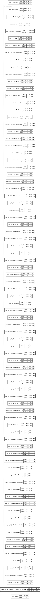
#Train the classification head:
#base_model.trainable = True #if we included the model layers, but not the model itself, this doesn't have any effect
for layer in base_model.layers[:]:
layer.trainable = False
#for layer in base_model.layers[81:]:
# layer.trainable = True
optims = {
'sgd': optimizers.SGD(lr=0.1, momentum=0.9, decay=0.01),
'adam': optimizers.Adam(0.01),
'nadam': optimizers.Nadam(learning_rate=0.1, beta_1=0.9, beta_2=0.999, epsilon=1e-07)
}
model.compile(
loss='categorical_crossentropy',
optimizer=optims['adam'],
metrics=['accuracy']
)
model.summary()Model: "functional_1"
_________________________________________________________________
Layer (type) Output Shape Param #
=================================================================
input_2 (InputLayer) [(None, 48, 48, 3)] 0
_________________________________________________________________
mobilenet_trunc (Functional) (None, 1, 1, 1024) 2162880
_________________________________________________________________
global_average_pooling2d (Gl (None, 1024) 0
_________________________________________________________________
pred (Dense) (None, 7) 7175
=================================================================
Total params: 2,170,055
Trainable params: 7,175
Non-trainable params: 2,162,880
_________________________________________________________________initial_epochs = 5
# total_epochs = initial_epochs + 5
history = model.fit_generator(train_rgb_datagen.flow(train_images_rgb,
train_labels,
batch_size=BATCH_SIZE),
validation_data=(val_images_rgb,
val_labels),
class_weight = class_weight,
steps_per_epoch=len(train_images) / BATCH_SIZE,
#initial_epoch = history.epoch[-1],
#epochs = total_epochs,
epochs = initial_epochs,
callbacks=callbacks,
use_multiprocessing=True)Epoch 1/5
449/448 [==============================] - 23s 51ms/step - loss: 0.3093 - accuracy: 0.3429 - val_loss: 1.8735 - val_accuracy: 0.3892
Epoch 2/5
449/448 [==============================] - 22s 49ms/step - loss: 0.2979 - accuracy: 0.3632 - val_loss: 1.9810 - val_accuracy: 0.3461
Epoch 3/5
449/448 [==============================] - 21s 47ms/step - loss: 0.2963 - accuracy: 0.3704 - val_loss: 1.9980 - val_accuracy: 0.4018
Epoch 4/5
449/448 [==============================] - 22s 50ms/step - loss: 0.3032 - accuracy: 0.3677 - val_loss: 2.1077 - val_accuracy: 0.3770
Epoch 5/5
449/448 [==============================] - 22s 49ms/step - loss: 0.2978 - accuracy: 0.3697 - val_loss: 1.8218 - val_accuracy: 0.3954Fine-tuning
Here I wanted to find out whether the training converges better or faster if the training is performed iteratively, whereby first the upper layers of the base_model is fine-tuned with a moderately slow learning rate (1e-3), then the entire base model will be fine-tuned in a second round with a small learning rate (1e-4). In the non-iterative approach, the whole base_model is trained with that smal learning rate (1e-4). However I did not see evidence for any advantage of the iterative approach, therefore I’ve set the ‘iterative_finetuning’ switch to False.
iterative_finetuning = False First iteration: partial fine-tuning of the base_model
if iterative_finetuning:
#fine-tune the top layers (blocks 7-12):
# Let's take a look to see how many layers are in the base model
print("Number of layers in the base model: ", len(base_model.layers))
#base_model.trainable = True #if we included the model layers, but not the model itself, this doesn't have any effect
for layer in base_model.layers:
layer.trainable = False
for layer in base_model.layers[-37:]: #blocks 7-12
layer.trainable = True
optims = {
'sgd': optimizers.SGD(lr=0.01, momentum=0.9, decay=0.01),
'adam': optimizers.Adam(0.001),
'nadam': optimizers.Nadam(learning_rate=0.01, beta_1=0.9, beta_2=0.999, epsilon=1e-07)
}
model.compile(
loss='categorical_crossentropy',
optimizer=optims['adam'],
metrics=['accuracy']
)
model.summary()if iterative_finetuning:
fine_tune_epochs = 40
total_epochs = history.epoch[-1] + fine_tune_epochs
history = model.fit_generator(train_rgb_datagen.flow(train_images_rgb,
train_labels,
batch_size=BATCH_SIZE),
validation_data=(val_images_rgb,
val_labels),
class_weight = class_weight,
steps_per_epoch=len(train_images) / BATCH_SIZE,
initial_epoch = history.epoch[-1],
epochs = total_epochs,
callbacks=callbacks,
use_multiprocessing=True)if iterative_finetuning:
test_loss, test_acc = model.evaluate(test_images_rgb, test_labels) #, test_labels
print('test caccuracy:', test_acc)if iterative_finetuning:
render_history(history, 'mobilenet12blocks_wdgenaug_finetuning1')Second Iteration (or the main iteration, if iterative_finetuning was set to False): fine-tuning of the entire base_model
if iterative_finetuning:
ftsuf = 'ft_2'
else:
ftsuf = 'ft_atonce'#fine-tune all layers
# Let's take a look to see how many layers are in the base model
print("Number of layers in the base model: ", len(base_model.layers))
#base_model.trainable = True #if we included the model layers, but not the model itself, this doesn't have any effect
for layer in base_model.layers:
layer.trainable = False
for layer in base_model.layers[:]:
layer.trainable = True
optims = {
'sgd': optimizers.SGD(lr=0.01, momentum=0.9, decay=0.01),
'adam': optimizers.Adam(0.0001),
'nadam': optimizers.Nadam(learning_rate=0.01, beta_1=0.9, beta_2=0.999, epsilon=1e-07)
}
model.compile(
loss='categorical_crossentropy',
optimizer=optims['adam'],
metrics=['accuracy']
)
model.summary()Number of layers in the base model: 81
Model: "functional_1"
_________________________________________________________________
Layer (type) Output Shape Param #
=================================================================
input_2 (InputLayer) [(None, 48, 48, 3)] 0
_________________________________________________________________
mobilenet_trunc (Functional) (None, 1, 1, 1024) 2162880
_________________________________________________________________
global_average_pooling2d (Gl (None, 1024) 0
_________________________________________________________________
pred (Dense) (None, 7) 7175
=================================================================
Total params: 2,170,055
Trainable params: 2,152,263
Non-trainable params: 17,792
_________________________________________________________________fine_tune_epochs = 100
total_epochs = history.epoch[-1] + fine_tune_epochs
history = model.fit_generator(train_rgb_datagen.flow(train_images_rgb,
train_labels,
batch_size=BATCH_SIZE),
validation_data=(val_images_rgb,
val_labels),
class_weight = class_weight,
steps_per_epoch=len(train_images) / BATCH_SIZE,
initial_epoch = history.epoch[-1],
epochs = total_epochs,
callbacks=callbacks,
use_multiprocessing=True)Epoch 5/104
449/448 [==============================] - 25s 56ms/step - loss: 0.2373 - accuracy: 0.4185 - val_loss: 1.4505 - val_accuracy: 0.4728
Epoch 6/104
449/448 [==============================] - 24s 54ms/step - loss: 0.2106 - accuracy: 0.4788 - val_loss: 1.3257 - val_accuracy: 0.5096
Epoch 7/104
449/448 [==============================] - 24s 54ms/step - loss: 0.1995 - accuracy: 0.5043 - val_loss: 1.2294 - val_accuracy: 0.5411
Epoch 8/104
449/448 [==============================] - 25s 55ms/step - loss: 0.1947 - accuracy: 0.5164 - val_loss: 1.2620 - val_accuracy: 0.5272
Epoch 9/104
449/448 [==============================] - 24s 54ms/step - loss: 0.1886 - accuracy: 0.5320 - val_loss: 1.2909 - val_accuracy: 0.5032
Epoch 10/104
449/448 [==============================] - 24s 54ms/step - loss: 0.1853 - accuracy: 0.5416 - val_loss: 1.1900 - val_accuracy: 0.5634
Epoch 11/104
449/448 [==============================] - 25s 56ms/step - loss: 0.1797 - accuracy: 0.5533 - val_loss: 1.1744 - val_accuracy: 0.5717
Epoch 12/104
449/448 [==============================] - 24s 54ms/step - loss: 0.1780 - accuracy: 0.5587 - val_loss: 1.2182 - val_accuracy: 0.5425
Epoch 13/104
449/448 [==============================] - 25s 56ms/step - loss: 0.1744 - accuracy: 0.5685 - val_loss: 1.1660 - val_accuracy: 0.5665
Epoch 14/104
449/448 [==============================] - 25s 55ms/step - loss: 0.1719 - accuracy: 0.5716 - val_loss: 1.1556 - val_accuracy: 0.5740
Epoch 15/104
449/448 [==============================] - 25s 55ms/step - loss: 0.1707 - accuracy: 0.5766 - val_loss: 1.1153 - val_accuracy: 0.5924
Epoch 16/104
449/448 [==============================] - 25s 56ms/step - loss: 0.1676 - accuracy: 0.5822 - val_loss: 1.1014 - val_accuracy: 0.5890
Epoch 17/104
449/448 [==============================] - 25s 56ms/step - loss: 0.1658 - accuracy: 0.5891 - val_loss: 1.0770 - val_accuracy: 0.6088
Epoch 18/104
449/448 [==============================] - 25s 56ms/step - loss: 0.1645 - accuracy: 0.5895 - val_loss: 1.0803 - val_accuracy: 0.6013
Epoch 19/104
449/448 [==============================] - 24s 54ms/step - loss: 0.1615 - accuracy: 0.5985 - val_loss: 1.0768 - val_accuracy: 0.5952
Epoch 20/104
449/448 [==============================] - 25s 56ms/step - loss: 0.1602 - accuracy: 0.6019 - val_loss: 1.0971 - val_accuracy: 0.5932
Epoch 21/104
449/448 [==============================] - ETA: 0s - loss: 0.1591 - accuracy: 0.6041
Epoch 00021: ReduceLROnPlateau reducing learning rate to 2.499999936844688e-05.
449/448 [==============================] - 26s 57ms/step - loss: 0.1591 - accuracy: 0.6041 - val_loss: 1.0884 - val_accuracy: 0.6007
Epoch 22/104
449/448 [==============================] - 25s 56ms/step - loss: 0.1487 - accuracy: 0.6299 - val_loss: 1.0391 - val_accuracy: 0.6158
Epoch 23/104
449/448 [==============================] - 24s 54ms/step - loss: 0.1465 - accuracy: 0.6351 - val_loss: 1.0547 - val_accuracy: 0.6158
Epoch 24/104
449/448 [==============================] - 26s 57ms/step - loss: 0.1455 - accuracy: 0.6372 - val_loss: 1.0437 - val_accuracy: 0.6141
Epoch 25/104
449/448 [==============================] - 26s 57ms/step - loss: 0.1449 - accuracy: 0.6379 - val_loss: 1.0374 - val_accuracy: 0.6236
Epoch 26/104
449/448 [==============================] - 25s 57ms/step - loss: 0.1441 - accuracy: 0.6361 - val_loss: 1.0269 - val_accuracy: 0.6216
Epoch 27/104
449/448 [==============================] - 24s 53ms/step - loss: 0.1426 - accuracy: 0.6414 - val_loss: 1.0445 - val_accuracy: 0.6186
Epoch 28/104
449/448 [==============================] - 26s 58ms/step - loss: 0.1431 - accuracy: 0.6438 - val_loss: 1.0358 - val_accuracy: 0.6213
Epoch 29/104
449/448 [==============================] - 26s 57ms/step - loss: 0.1406 - accuracy: 0.6493 - val_loss: 1.0244 - val_accuracy: 0.6239
Epoch 30/104
449/448 [==============================] - 26s 59ms/step - loss: 0.1409 - accuracy: 0.6473 - val_loss: 1.0648 - val_accuracy: 0.6124
Epoch 31/104
449/448 [==============================] - 24s 54ms/step - loss: 0.1405 - accuracy: 0.6517 - val_loss: 1.0506 - val_accuracy: 0.6158
Epoch 32/104
449/448 [==============================] - 26s 57ms/step - loss: 0.1392 - accuracy: 0.6518 - val_loss: 1.0222 - val_accuracy: 0.6208
Epoch 33/104
448/448 [============================>.] - ETA: 0s - loss: 0.1391 - accuracy: 0.6556
Epoch 00033: ReduceLROnPlateau reducing learning rate to 6.24999984211172e-06.
449/448 [==============================] - 27s 59ms/step - loss: 0.1391 - accuracy: 0.6554 - val_loss: 1.0329 - val_accuracy: 0.6208
Epoch 34/104
449/448 [==============================] - 26s 58ms/step - loss: 0.1348 - accuracy: 0.6613 - val_loss: 1.0199 - val_accuracy: 0.6255
Epoch 35/104
449/448 [==============================] - 25s 55ms/step - loss: 0.1338 - accuracy: 0.6652 - val_loss: 1.0257 - val_accuracy: 0.6280
Epoch 36/104
449/448 [==============================] - 27s 59ms/step - loss: 0.1326 - accuracy: 0.6690 - val_loss: 1.0187 - val_accuracy: 0.6219
Epoch 37/104
449/448 [==============================] - 26s 58ms/step - loss: 0.1335 - accuracy: 0.6651 - val_loss: 1.0161 - val_accuracy: 0.6297
Epoch 38/104
449/448 [==============================] - 23s 52ms/step - loss: 0.1330 - accuracy: 0.6678 - val_loss: 1.0254 - val_accuracy: 0.6252
Epoch 39/104
449/448 [==============================] - 27s 59ms/step - loss: 0.1326 - accuracy: 0.6685 - val_loss: 1.0133 - val_accuracy: 0.6317
Epoch 40/104
449/448 [==============================] - 27s 59ms/step - loss: 0.1327 - accuracy: 0.6673 - val_loss: 1.0138 - val_accuracy: 0.6330
Epoch 41/104
449/448 [==============================] - 27s 60ms/step - loss: 0.1323 - accuracy: 0.6703 - val_loss: 1.0157 - val_accuracy: 0.6261
Epoch 42/104
449/448 [==============================] - 25s 56ms/step - loss: 0.1330 - accuracy: 0.6685 - val_loss: 1.0189 - val_accuracy: 0.6289
Epoch 43/104
449/448 [==============================] - 26s 58ms/step - loss: 0.1326 - accuracy: 0.6675 - val_loss: 1.0165 - val_accuracy: 0.6283
Epoch 44/104
448/448 [============================>.] - ETA: 0s - loss: 0.1317 - accuracy: 0.6701
Epoch 00044: ReduceLROnPlateau reducing learning rate to 1.56249996052793e-06.
449/448 [==============================] - 27s 60ms/step - loss: 0.1317 - accuracy: 0.6701 - val_loss: 1.0146 - val_accuracy: 0.6280
Epoch 45/104
449/448 [==============================] - 24s 54ms/step - loss: 0.1308 - accuracy: 0.6737 - val_loss: 1.0165 - val_accuracy: 0.6300
Epoch 46/104
449/448 [==============================] - 27s 61ms/step - loss: 0.1309 - accuracy: 0.6746 - val_loss: 1.0142 - val_accuracy: 0.6317
Epoch 47/104
449/448 [==============================] - 27s 61ms/step - loss: 0.1297 - accuracy: 0.6779 - val_loss: 1.0161 - val_accuracy: 0.6278
Epoch 48/104
449/448 [==============================] - ETA: 0s - loss: 0.1298 - accuracy: 0.6748
Epoch 00048: ReduceLROnPlateau reducing learning rate to 3.906249901319825e-07.
449/448 [==============================] - 24s 54ms/step - loss: 0.1298 - accuracy: 0.6748 - val_loss: 1.0151 - val_accuracy: 0.6328
Epoch 49/104
449/448 [==============================] - 24s 53ms/step - loss: 0.1296 - accuracy: 0.6771 - val_loss: 1.0138 - val_accuracy: 0.6328
Epoch 50/104
449/448 [==============================] - 28s 62ms/step - loss: 0.1306 - accuracy: 0.6742 - val_loss: 1.0144 - val_accuracy: 0.6328
Epoch 51/104
448/448 [============================>.] - ETA: 0s - loss: 0.1293 - accuracy: 0.6780Restoring model weights from the end of the best epoch.
449/448 [==============================] - 24s 54ms/step - loss: 0.1293 - accuracy: 0.6780 - val_loss: 1.0146 - val_accuracy: 0.6328
Epoch 00051: early stoppingtest_loss, test_acc = model.evaluate(test_images_rgb, test_labels) #, test_labels
print('test caccuracy:', test_acc)113/113 [==============================] - 0s 4ms/step - loss: 1.0364 - accuracy: 0.6236
test caccuracy: 0.623572051525116render_history(history, 'mobilenet12blocks_wdgenaug_'+ftsuf)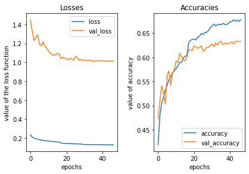
pred_test_labels = model.predict(test_images_rgb)model_yaml = model.to_yaml()
with open('MobileNet12blocks_wdgenaug_onrawdata_valacc_' + ftsuf + '.yaml', 'w') as yaml_file:
yaml_file.write(model_yaml)
model.save('MobileNet12blocks_wdgenaug_onrawdata_valacc_' + ftsuf + '.h5')Analyse Results
Analyze the predictions made for the test data
def plot_image_and_emotion(test_image_array, test_image_label, pred_test_labels, image_number):
""" Function to plot the image and compare the prediction results with the label """
fig, axs = plt.subplots(1, 2, figsize=(12, 6), sharey=False)
bar_label = emotions.values()
axs[0].imshow(test_image_array[image_number], 'gray')
axs[0].set_title(emotions[test_image_label[image_number]])
axs[1].bar(bar_label, pred_test_labels[image_number], color='orange', alpha=0.7)
axs[1].grid()
plt.show()import ipywidgets as widgets
@widgets.interact
def f(x=106):
#print(x)
plot_image_and_emotion(test_image_array, test_image_label, pred_test_labels, x)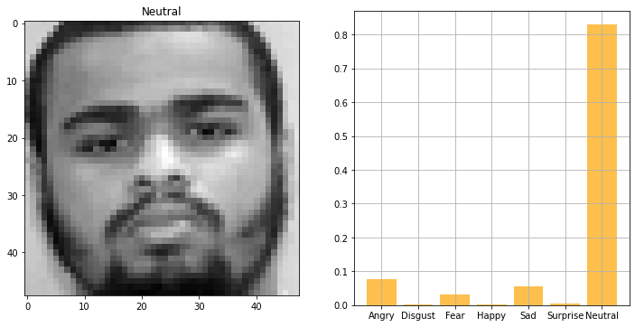
Make inference for a single image from scratch:
def predict_emotion_of_image(test_image_array, test_image_label, pred_test_labels, image_number):
input_arr = test_image_array[image_number]/255
input_arr = input_arr.reshape((48, 48, 1))
input_arr_rgb = grayscale_to_rgb(convert_to_tensor(input_arr))
predictions = model.predict(np.array([input_arr_rgb]))
predictions_f = ['%s:%5.2f'%(emotions[i],p*100) for i,p in enumerate(predictions[0])]
label = emotions[test_image_label[image_number]]
return f'Label: {label}\nPredictions: {predictions_f}'import ipywidgets as widgets
@widgets.interact
def f(x=106):
result = predict_emotion_of_image(test_image_array, test_image_label, pred_test_labels, x)
print(result)Label: Neutral
Predictions: ['Angry: 7.62', 'Disgust: 0.10', 'Fear: 3.06', 'Happy: 0.14', 'Sad: 5.54', 'Surprise: 0.56', 'Neutral:82.98']Compare the distribution of labels and predicted labels
def plot_compare_distributions(array1, array2, title1='', title2=''):
df_array1 = pd.DataFrame()
df_array2 = pd.DataFrame()
df_array1['emotion'] = array1.argmax(axis=1)
df_array2['emotion'] = array2.argmax(axis=1)
fig, axs = plt.subplots(1, 2, figsize=(12, 6), sharey=False)
x = emotions.values()
y = df_array1['emotion'].value_counts()
keys_missed = list(set(emotions.keys()).difference(set(y.keys())))
for key_missed in keys_missed:
y[key_missed] = 0
axs[0].bar(x, y.sort_index(), color='orange')
axs[0].set_title(title1)
axs[0].grid()
y = df_array2['emotion'].value_counts()
keys_missed = list(set(emotions.keys()).difference(set(y.keys())))
for key_missed in keys_missed:
y[key_missed] = 0
axs[1].bar(x, y.sort_index())
axs[1].set_title(title2)
axs[1].grid()
plt.show()plot_compare_distributions(test_labels, pred_test_labels, title1='test labels', title2='predict labels')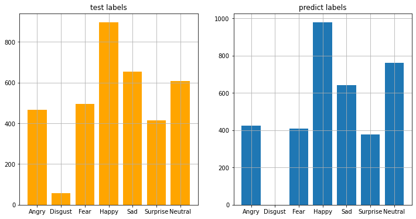
Wrong Predictions
The accuracy score is about 63% on the test set. Let’s try to understand where the model is doing wrong.
df_compare = pd.DataFrame()
df_compare['real'] = test_labels.argmax(axis=1)
df_compare['pred'] = pred_test_labels.argmax(axis=1)
df_compare['wrong'] = np.where(df_compare['real']!=df_compare['pred'], 1, 0)from sklearn.metrics import confusion_matrix
from mlxtend.plotting import plot_confusion_matrix
conf_mat = confusion_matrix(test_labels.argmax(axis=1), pred_test_labels.argmax(axis=1))
fig, ax = plot_confusion_matrix(conf_mat=conf_mat,
show_normed=True,
show_absolute=False,
class_names=emotions.values(),
figsize=(8, 8))
fig.show()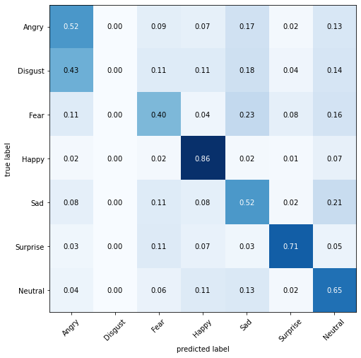
Conclusion
Using a partial MobileNet pretrained on ImageNet dataset, fine-tuning it, and adding some augmentation, we achieved here a test accuracy of about 63%.
I wondered whether some of this improvement might be simply due to the better training with shrinking learning rates (ReduceLROnPlateau callback) and a higher number of training epochs (original model was trained only for 12 epochs, whereas here we wait until convergence), and data augmentation. I checked these in another notebook (to be published later): using the callback funtions, my training converged in 25 epochs, yielding a test score of ~55%, i.e., not different from the original score achieved by the simple CNN model) and using augmentation on top, the test score increased to about 57%. So the improvement due to model in isoluation is about 6%.
Although 6% can considered to be a significant improvement, on an absolute scale, 63% accuracy is not good score for an image classification task. It seems like this rather poor score has to do with: 1) the inherently difficult task of distinguishing subtle emotions like neutral vs. sad, and angry vs. surprised; 2) unbalanced dataset that includes a relatively low number of images for certain emotions like disgust (380 in total), for which, the model achieves the lowest accuracies as revealed by the confusion matrix; 3) rather poor data quality, as has been analsed elsewhere, e.g., as exemplifed in this nice notebook of Gaurev Sharma.
It has to be noted that the partial (first 12 blocks) MobileNet model we used here, although being a relatively small model with 2.17 M parameters (for comparison, see the Keras Applications), it is still vastly larger than the original CNN model with only 318 K parameters. Therefore the partial MobileNet model presented here needs more training time, space to store the final model, and may consequently cause latency issues.
That’s all for now, I hope you liked this notebook.